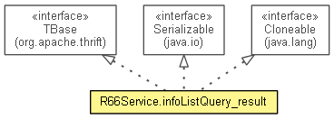

org.waarp.thrift.r66
Class R66Service.infoListQuery_result
java.lang.Object
 org.waarp.thrift.r66.R66Service.infoListQuery_result
org.waarp.thrift.r66.R66Service.infoListQuery_result
- All Implemented Interfaces:
- Serializable, Cloneable, Comparable<R66Service.infoListQuery_result>, org.apache.thrift.TBase<R66Service.infoListQuery_result,R66Service.infoListQuery_result._Fields>
- Enclosing class:
- R66Service
public static class R66Service.infoListQuery_result
- extends Object
- implements org.apache.thrift.TBase<R66Service.infoListQuery_result,R66Service.infoListQuery_result._Fields>, Serializable, Cloneable

- See Also:
- Serialized Form
metaDataMap
public static final Map<R66Service.infoListQuery_result._Fields,org.apache.thrift.meta_data.FieldMetaData> metaDataMap
R66Service.infoListQuery_result
public R66Service.infoListQuery_result()
R66Service.infoListQuery_result
public R66Service.infoListQuery_result(List<String> success)
R66Service.infoListQuery_result
public R66Service.infoListQuery_result(R66Service.infoListQuery_result other)
- Performs a deep copy on other.
deepCopy
public R66Service.infoListQuery_result deepCopy()
- Specified by:
deepCopy in interface org.apache.thrift.TBase<R66Service.infoListQuery_result,R66Service.infoListQuery_result._Fields>
clear
public void clear()
- Specified by:
clear in interface org.apache.thrift.TBase<R66Service.infoListQuery_result,R66Service.infoListQuery_result._Fields>
getSuccessSize
public int getSuccessSize()
getSuccessIterator
public Iterator<String> getSuccessIterator()
addToSuccess
public void addToSuccess(String elem)
getSuccess
public List<String> getSuccess()
setSuccess
public R66Service.infoListQuery_result setSuccess(List<String> success)
unsetSuccess
public void unsetSuccess()
isSetSuccess
public boolean isSetSuccess()
- Returns true if field success is set (has been assigned a value) and false otherwise
setSuccessIsSet
public void setSuccessIsSet(boolean value)
setFieldValue
public void setFieldValue(R66Service.infoListQuery_result._Fields field,
Object value)
- Specified by:
setFieldValue in interface org.apache.thrift.TBase<R66Service.infoListQuery_result,R66Service.infoListQuery_result._Fields>
getFieldValue
public Object getFieldValue(R66Service.infoListQuery_result._Fields field)
- Specified by:
getFieldValue in interface org.apache.thrift.TBase<R66Service.infoListQuery_result,R66Service.infoListQuery_result._Fields>
isSet
public boolean isSet(R66Service.infoListQuery_result._Fields field)
- Returns true if field corresponding to fieldID is set (has been assigned a value) and
false otherwise
- Specified by:
isSet in interface org.apache.thrift.TBase<R66Service.infoListQuery_result,R66Service.infoListQuery_result._Fields>
equals
public boolean equals(Object that)
- Overrides:
equals in class Object
equals
public boolean equals(R66Service.infoListQuery_result that)
hashCode
public int hashCode()
- Overrides:
hashCode in class Object
compareTo
public int compareTo(R66Service.infoListQuery_result other)
- Specified by:
compareTo in interface Comparable<R66Service.infoListQuery_result>
fieldForId
public R66Service.infoListQuery_result._Fields fieldForId(int fieldId)
- Specified by:
fieldForId in interface org.apache.thrift.TBase<R66Service.infoListQuery_result,R66Service.infoListQuery_result._Fields>
read
public void read(org.apache.thrift.protocol.TProtocol iprot)
throws org.apache.thrift.TException
- Specified by:
read in interface org.apache.thrift.TBase<R66Service.infoListQuery_result,R66Service.infoListQuery_result._Fields>
- Throws:
org.apache.thrift.TException
write
public void write(org.apache.thrift.protocol.TProtocol oprot)
throws org.apache.thrift.TException
- Specified by:
write in interface org.apache.thrift.TBase<R66Service.infoListQuery_result,R66Service.infoListQuery_result._Fields>
- Throws:
org.apache.thrift.TException
toString
public String toString()
- Overrides:
toString in class Object
validate
public void validate()
throws org.apache.thrift.TException
- Throws:
org.apache.thrift.TException
Copyright © 2012 Waarp. All Rights Reserved.